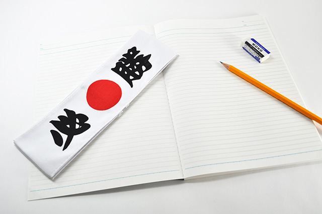

今からでも間に合う
高校受験を間近にひかえた皆さん、勉強に熱は入っているでしょうか。
私は35年に渡って塾講師として受験生、特に高校受験生を直接指導した経験をもっています。
その経験に基づいて皆さんにお話したいと思います。
今日は元旦です。年が明けたわけです。世間では「最後の追い込み」とか「直前の総仕上げの時期」などと言っているかも知れません。
確かに早いところでは今月から入試が始まり2月いっぱいまで「本番」が続くことになります。
しかし、皆さんは「最後の追い込み」とか「直前期」だとかのコトバに惑わされることなく、地に足をつけてしっかり勉強しましょう。
というのも今から入試の終わる2月初め～中旬は思ったより長い時間があるのです。
仮に1日5時間勉強するとして30日で150時間、20日間しかないとしても1日6時間やれば120時間もあるのです。
2月のなかばに「本番」がある人は40日以上あります。これだと200時間も勉強時間があるのです。
冬休み中は、塾での勉強も含めると1日10時間くらいになるので今からの一か月間で、少なくとも170～180時間勉強できる計算となります。
どうでしょう。思ったより「時間はある」と感じませんか？
誰でも、あと200時間前後の勉強時間が残されているのです。
この200時間に自分の持てる力をすべて投入したら、ものすごい結果が出ることは間違いないのです。
考えてみてください。
一か月間200時間、全神経、全エネルギー、ありったけの集中力をフル稼働させたことなど今まであったでしょうか？
「自分は少し遅れている」「間に合わないのでは」と思っている人もいるかも知れませんが、心配しないでください。
200時間もあれば、いったんゼロから勉強したとしても相当なレベルまで行くのです。
まして皆さんは、仮にもこれまでの一応の蓄積があります。
追いつくどころか逆転も十分可能です。
今から全力で臨めば本番には十分間に合うのです。
本気スイッチを入れる
これからは毎日、1日1日が最後だと思って先のことは考えず「自分のやるべきこと」に向かってください。
本気モードになり、極度に集中力が高まった状態をフロー状態と呼びますが、人はこの「フロー」に入ると普段の10倍も能率が上がると言われています。
人間の脳は実は、潜在能力の3~5%、せいぜい10%しか使われていないのです。
それが何らかの事情で追い込まれたり、生命の危険に遭遇したときなど、その隠れた力が発揮される瞬間があります。
あるいは、偉大な発明や発見、企業のヒット商品、スポーツ選手の驚くべきパフォーマンスなど人間が奇跡的な能力を発揮するとき、それはフロー状態がもたらしたものと考えられています。
実は、皆さんの先輩たちも入試直前このフロー状態に入る人がたくさんいます。彼らはまさにこの時期、本気スイッチが入って眠っている能力を目覚めさせたのです。
本気スイッチが入り、フロー状態になる！
入試直前にこの状態になった人は、必ず合格する
不可能と思われていた学校に受かる人も珍しくありません。毎年こういう例を私はたくさん見てきました。
能率が10倍にもハネ上がればそれも当然です。
本気スイッチが入ってフローになると次のような感覚になります。
1 時間感覚がなくなる
たとえば何かに没頭していて1時間くらいたった気がして時計を見ると、すでに3時間が経過していたという状態です。
遊びやゲームなど楽しいことをしていると時間が過ぎるのを忘れる経験があるでしょう。
つまり、集中力が高まると時間感覚はなくなるのです。
この時期勉強に没頭することで同じ経験ができます。ある人は、冬休み朝から勉強に没頭していて夕食に呼ばれるまで「夜になっていることに気づかなかった」ということさえありました。
2 感情の起伏が平坦に
これまで「わー入試が近いのに勉強進まない！」とか「受かるかどうか不安」と騒いできた人もいるでしょう。不安だ心配だと大騒ぎする人は、単に勉強していないだけです。不安だから勉強が進まないのではなく、勉強に正面から向き合わないから「不安」「心配」に取り込まれてしまうのです。
もうこの時期、逃げることはできないのです。そう覚悟を決めて向き合えば不安など感じている「余裕」はありません。
フローに入っている人は、当然ながら「いまこの瞬間」に集中しているので「落ちたらどうしよう」などという未来への心配はわいてきません。
極度の集中状態は決して気持ちが高ぶったり不安に襲われたりはせず、おだやかで澄んだ心境になります。
3 結果が気にならない
今までは「落ちたくない」「絶対受かりたい」という気持ちの人もいたかも知れません。
しかし、フローに入ると不思議なことに結果が気にならなくなります。
これはヤケクソになったのではなく、結果をアレコレ気にしなくなった。全力を尽くしているときは不安や恐怖もなくなる代わりに、結果を気にして悩むこともなくなるのです。
「えっ？絶対受かりたいという強い気持ちも必要なのでは」…と思うかも知れませんが、集中状態では結果に固執する気持ち自体が薄れ「どちらでも良い」心境になるものです。
そして不思議ですが「成果」にこだわらなくなった人ほど成果を得る。つまり合格しやすくなります。
4 充実感とオートマチック
フローに入っている人は心が落ち着き、心地良い緊張感と充実感に包まれます。そして勉強も、何をどのくらい勉強すべきか「やるべきこと」が明確になり、身体が勝手に動いているような感覚になります。
いちいち頭でアレコレ考えなくても、身体の知性が働いて自動操縦（オートマチック）で目的地へ向かって進んで行く。そんな感じです。
本番は一瞬だがプロセスは一生
本気スイッチを入れてフローになる大切さは分かったと思います。
また、どういう状態が集中度マックス（フロー状態）かも理解できたでしょう。
では、最後に一刻も早くフローに入るための心がまえについて書きます。参考にしてください。
1 高校入学後をイメージする
すでに受験校は決まっていますね。いまの関心事は果たして合格できるかどうかに集まりがちですが、先にも言ったように「成果」にこだわるのではなく、つまり合否を心配するのではなく高校入学後に自分はどんな生活を送っているのかをイメージしましょう。
どんな部活に入っているか、どんな先生や友人との出会いがあるかイキイキとイメージしてみてください。ワクワクを感じたらそれで終わりです。
どのみち、一か月かそこらで入試は終了します。そして三か月後にはどこかの高校に通っているわけです。近未来の「楽しく過ごしている自分」を想像して良い気分になってみてください。希望を感じてみてください。
2 受験勉強そのものを楽しむ
合否を心配して焦って勉強するのではなく、全力を尽くす自分になってください。今までのような「やらされている勉強」ではなく、自分がやりたい勉強を思いきりやると決意してください。そして勉強そのものを楽しんでやると決めてください。
本番は一瞬だがプロセスは一生
というのが私の考えです。スポーツなどの試合で優勝してもその喜びは、そのとき限りです。何年も嬉しがる人はいません。
でも、そこに向けて努力した事実は皆さんの中にしっかりと記憶されます。
自分の持てる力を出し尽くした経験は一生の宝となるでしょう。
たった一ヶ月かそこらの「全力で頑張った」プロセスはその後の人生で自信と困難を乗り越える勇気となって残り続けるのです。
受験勉強で勉強の面白さに目覚める人もたくさんいます。私もその中の１人です。
結果を恐れずプロセスを楽しんでください。
3 不安を感じても良い！
いくら本気モードになったとはいえ、誰しも不安に襲われるときはあります。急に怖くなったり不安で寝付けなくなることもあります。
そんなときは大丈夫、その不安を思いきり感じてください。不安や恐れがあるのに見て見ぬフリをしたり、ムリヤリ押さえつけるのは良くありません。かえって大きくなるからです。
不安を感じたらこう思ってください。「ああ、いま自分は不安なんだぁ」と「不安」をしっかり感じ見つめましょう。すると不思議なことに不安はどこかへ行ってしまいます。不安を認めてあげたからです。不安が出てきたらその都度「不安さん、コンニチワ(笑)」というくらいの気持ちで気づいてあげましょう。
気づくだけで良いのです。
4 集中力を持続する
いったん本気モードに入ったら、途中でスイッチを切らないようにしましょう。
皆さんの周囲に、もしかしたらすでに合格してしまった人などが「終わったぁ遊ぶぞー」という雰囲気を醸し出しているかも知れません。
あるいは「受験あきらめ」モードで遊びまくっている人がいるかも知れません。
言うまでもないことですが、このようなモードに巻き込まれないで自分のペースを維持してください。
皆さんもいくつかの高校に合格すると「もういいや」と勉強終了モードに入る人が出るかも知れません。これはダメです。
最後の入試が終わるまで決して気を抜かないでください。少なくとも第一志望の受験が終わるまでホッとしてはいけないのです。
いったん本気スイッチを切ると簡単に元に戻りません。どんなに途中で合格しても1つでも受験校が残っているうちは「終戦宣言」はしないでください。それは敗北宣言と同じです。自分に負けたということです。後々後悔します。
以上、色々話してきましたが高校受験は決して悪いものではなく、全力を尽くすという貴重な体験ができるチャンスなのだと考えてください。
全力を出し切り限界まで挑むことがどれほど充実感を得られるのか。
自分が本気になったらどれほど素晴らしい力を示すことができるのか。
それを試す絶好のチャンスが来たのです。
この一か月の過ごし方ほど大切な時は、人生の中でもそう数多くあるものではない。
ならば本気でやってみよう。後で振り返って
「あんなに一生懸命努力したことはない！」と言えるほど、この一か月にかけてみてください。
必ずそれはすばらしい体験となるでしょう。
では全力でプロセスを楽しんでください。
私も心から皆さんの健闘を祈ります。